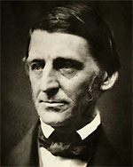

|

|

|
|
|
Philosopher, lecturer, poet, essayist, and the father of
transcendentalism, Ralph Waldo Emerson was also a passionate
abolitionist whose writings condemned both southern
slaveholders and those northerners who were not fully
committed to freedom for African-Americans. Initially
unenthusiastic about President Abraham Lincoln, Emerson
became a supporter during the Civil War and delivered a
widely reprinted eulogy upon the death of the President.
Born on May 25, 1803, Emerson was the son of a Unitarian
pastor named William, who died in 1811, and Ruth Haskins
Emerson. Emerson was educated at the Boston Latin School and
later at the Harvard Divinity School. In 1829 he was
ordained. He obtained a position as second pastor at the
Second Church of Boston and married Ellen Tucker, who died
only eighteen months later. Due to doubts about Unitarian
doctrine, Emerson left the church and traveled to Europe,
seeking knowledge and exposure to a wider range of thought.
In Britain, Emerson met Thomas Carlyle and other
thinkers, whose ideas prompted a re-examination of his
spirituality when he returned to Massachusetts in 1833. The
same year, Emerson married for a second time, to Lydia
Jackson. He began to lecture widely on spiritual issues,
developing a philosophy which is known today as
transcendentalism. In 1836 he published Nature, his first
book, which outlined transcendentalism broadly. From 1840
until 1844 he and Margaret Fuller edited a literary journal
dedicated to transcendentalism called The Dial.
Emerson would publish essays and poems throughout his life,
always emphasizing always individuality and the importance
of the self.
In addition to it focus on individuality,
Trancendentalism also embraced change. Perhaps this
reflected, in part, Emerson's conviction that the society in
which he lived was flawed by slavery. A committed
abolitionist, Emerson traveled widely before the war,
arguing everywhere that slavery should be destroyed.
Occasionally these beliefs spurred a violent reaction, as in
1861 when he was mobbed. During the war, Emerson wrote
widely on the progress of the conflict and on its aims.
Early in the Civil War, Emerson's reaction to Abraham
Lincoln was guarded. Lincoln's folksy manner and lack of
interest in the trappings of refinement were distasteful to
Emerson. In addition, Emerson was disappointed by Lincoln's
avowed preference for a war to save the Union rather than a
war to abolish slavery. Over time, however, Emerson came to
believe in Lincoln's leadership. The two men met in 1862,
very close to the publication of Emerson's essay "American
Civilization," which argued that northerners could not plead
innocence with regard to slavery. Because northern citizens
were not fully committed to abolition, he suggested, they
bore a portion of the blame for slavery. In 1863, Emerson
expressed his support of Lincoln's Emancipation Proclamation
in a poem entitled "Boston Hymn." After Lincoln's
assassination, Emerson spoke at a memorial in Concord,
Massachusetts, calling Lincoln "the father of his country."
Although Emerson continued to write and speak for the
rest of his life, his work after the Civil War was focused
mainly on his philosophy of life, rather than on politics.
On April 27, 1882 he died of pneumonia.
Source: Malcolm J. Rohrbrough, ed., Facts on File Encyclopedia of American
History: Expansion and Reform, 1813 to 1855 (New York: Facts on
File, 2003), 126-127.
|